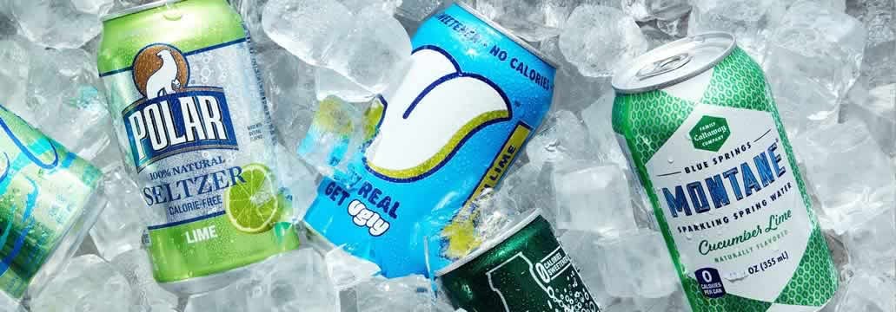

|
||||
| Welcome | Images | Why Seltzer | Links | Multimedia |
CARBONATED MANIAC?
Almost everything you ever asked about the carbonated drink is answered here.
LINKS
These are links to the different types of seltzer flavored waters that I've tried. If I never sampled it, then you won't see it on this list.
- PepsiCo's Bubly seltzer
- Kroger's Seltzer Water
- Coca-Cola's AHA seltzer
- La Croix sparkling water
- Deer Park Sparkling water
- Perrier original sparkling mineral water
- Polar Seltzer
- Coca-Cola's Dasani Sparkling Water (Discontinued, buy where you can and stock up)
- PepsiCo's Aquafina Sparkling Water (Discontinued, buy and stock up if you find it)
COCA-COLA REPLACES DASANI SPARKLING WITH AHA

It's sad but true. Coca-Cola replaced Dasani's Sparkling Water with AHA. I think this is a bad move on Coca-Cola's part as the quality of infused flavor isn't as spectacular as Dasani's.
PEPSICO REPLACES AQUAFINA SPARKLING WATER WITH SPLASH!
Wrong move there Pepsi! Aquafina's Sparkling water was as carefully crafted and tasty as it's (now defunct) Dasani competitor. Read more about it on Wikipedia. If you insist on drinking a Pepsi product, then there still is Bubly.